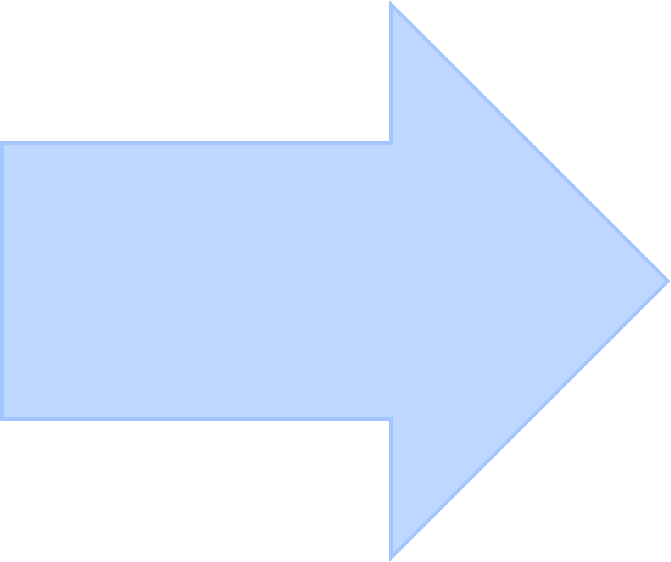

Kāda ir ergonomiska darba vieta?
Ja esi cilvēks, kurš strādā pie datora, noteikti lielāko dienas daļu pavadi, sēžot pie galda. Tomēr gadījumā, ja darba vieta nav atbilstoša noteiktiem parametriem, var rasties diskomforts, kas vēlāk negatīvi ietekmēs ne tikai kopējo labsajūtu, bet arī fizisko veselību. Lasi rakstu un uzzini, cik nozīmīga ir ergonomiska darba vieta un kā parūpēties, lai tā kļūtu piemērota produktīvai darba veikšanai.
Ergonomika ir zinātnes nozare, kas veic darba spēju un darba procesa ierobežojošo faktoru analīzi. Šīs nozares mērķis ir pielāgot darba vidi, lai strādāšana būtu maksimāli ērta, produktīva un neradītu veselības problēmas. Ergonomiska darba vieta ir atbilstoša cilvēka individuālajiem parametriem, ļaujot katram justies ērti un veikt savu darbu iespējami efektīvi. Ievēro pamata nosacījumus un pielāgo vidi tā, lai strādāšana nesagādātu nepatīkamas izjūtas.
